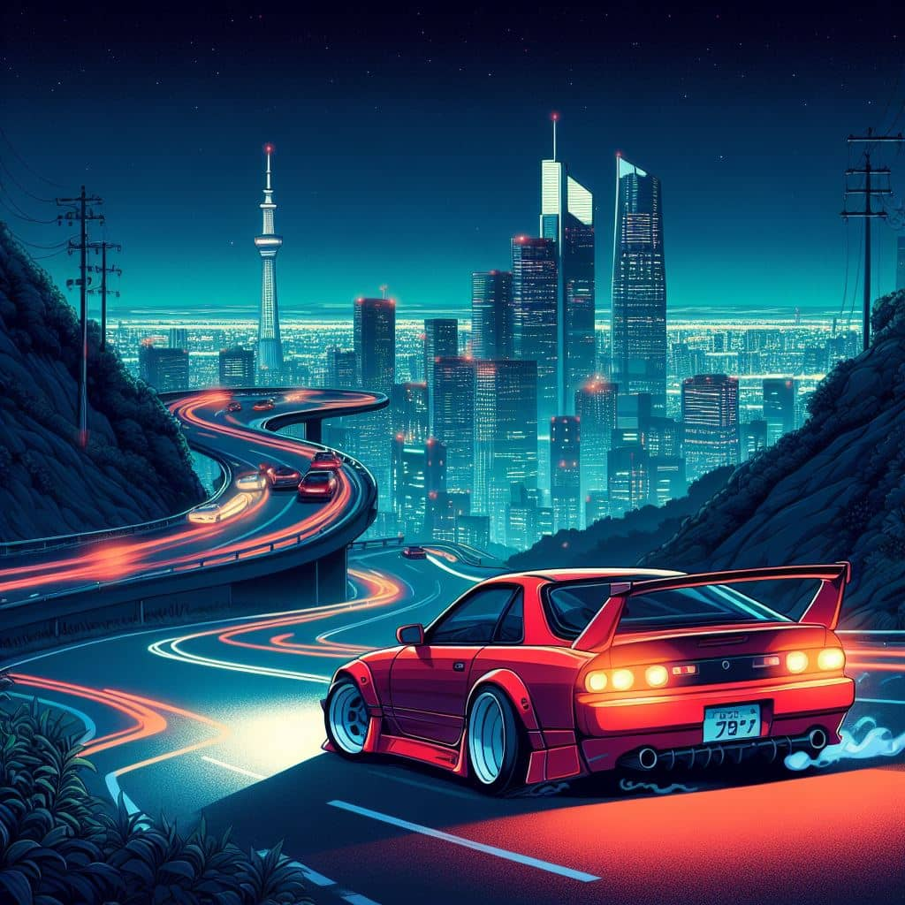
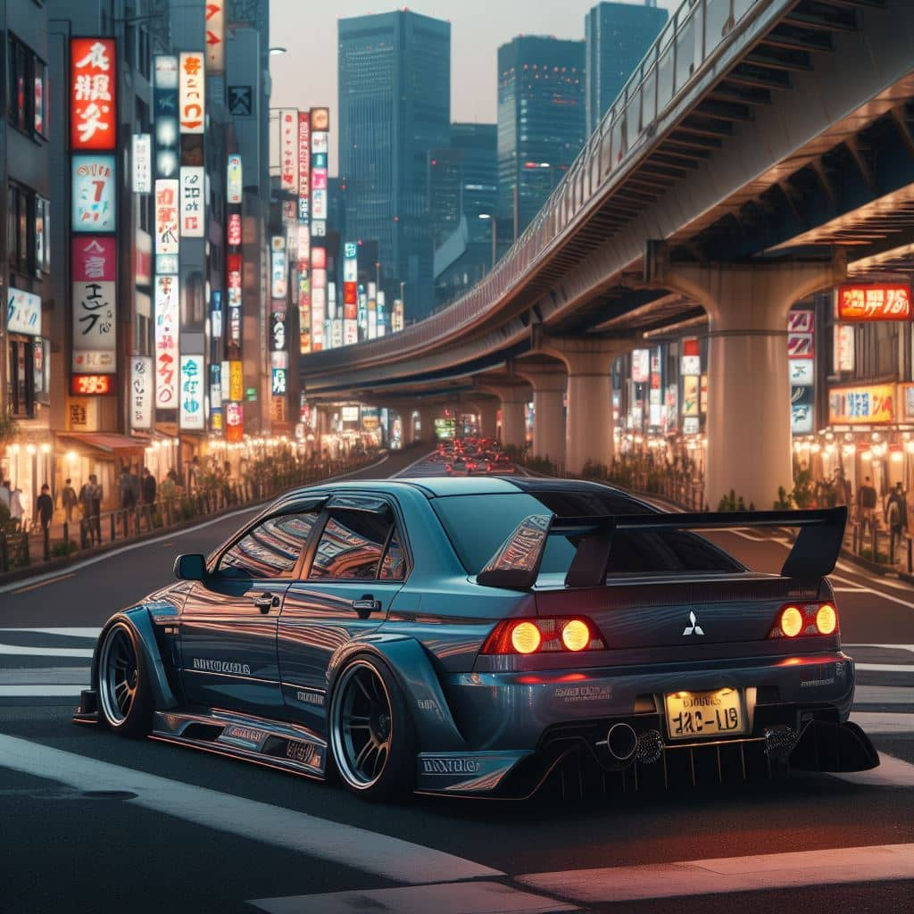

Introduction of iconic JDM cars such as the Datsun 240Z and Toyota Celica. The oil crisis spurs interest in fuel-efficient Japanese cars. The Mazda RX-2 became one of the first cars to use a Wankel rotary engine in the mainstream market. The Honda Accord debuts, marking Honda's entry into the midsize car market in the U.S. and Japan.
The rise of Japanese performance cars with models like the Toyota AE86, Mazda RX-7, and Nissan Skyline R31. Initial D manga series begins serialisation, sparking interest in drifting culture. Mitsubishi was on the leading edge of the Japanese sports car craze at the beginning of the 1980s, and the Starion was its primary weapon.
The Golden era of JDM sports cars with the introduction of the Nissan Skyline GT-R (R32, R33, R34), Toyota Supra Mk4, Honda NSX, and Mitsubishi Lancer Evolution series. As well as the Initial D anime airing in the late 90s. Subaru releases the Impreza WRX, featuring a turbocharged boxer engine and all-wheel drive, dominating rally circuits worldwide.
Japanese car tuning culture expands globally with events like Tokyo Auto Salon gaining international attention. Fast and Furious franchise popularises JDM cars in mainstream media. Lexus launches the LFA supercar, showcasing cutting-edge technology and craftsmanship in a limited-production, high-performance package.
The rise of electric and hybrid cars prompts Japanese manufacturers to shift focus towards eco-friendly models. Tuner culture continues to thrive with innovations in performance tuning and aftermarket parts. Honda releases the Civic Type R (FK2), setting a new front-wheel-drive lap record at the Nürburgring.Toyota launches the GR Supra (A90), marking the return of the legendary nameplate with a collaboration with BMW.